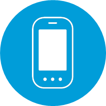

<!--
  Generated template for the DatosOperadoraPage page.

  See http://ionicframework.com/docs/components/#navigation for more info on
  Ionic pages and navigation.
-->
<ion-content padding class="startPage">
    <div class="content">
        <div class="content-list">
          <ion-list>
    
            
            <ion-label class="text">SELECCIONA EL SERVICIO A CANCELAR</ion-label>
            <ion-item>
                <ion-grid>
                    <ion-row>
                        <ion-col col-8> Movil </ion-col>
                        <ion-col col-4> Fijo </ion-col>
                    </ion-row>
                  </ion-grid>
            </ion-item>
            <br/>
            <ion-item>
                <ion-grid>
                    <ion-row>
                        <ion-col col-8> Internet </ion-col>
                        <ion-col col-4> TV </ion-col>
                    </ion-row>
                  </ion-grid>
            </ion-item>
          </ion-list>
        </div>
      </div>
</ion-content>
